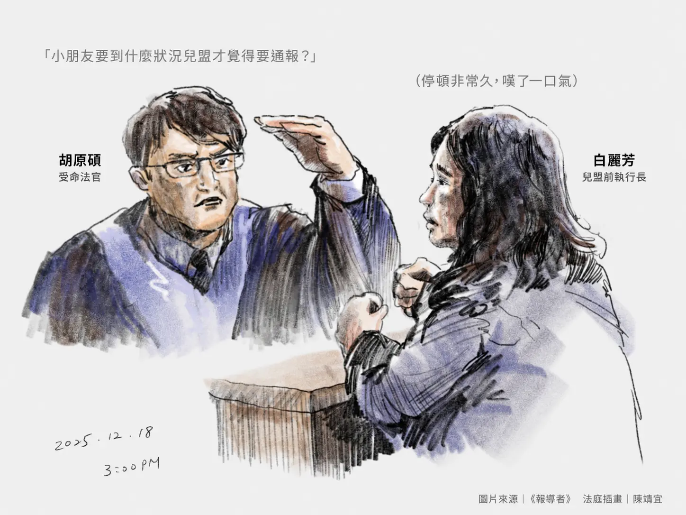

九月
多元觀察・庭訊記憶・責任通報
那一聲質問，
落在每一個大人的心上
那句話沒有停在證人席前。它越過法庭的牆，像一面鏡子，照向整個台灣社會。
2026.09.03 發布・2026.09.05 擴充證詞節錄

三次敲門
警訊並非同一天出現
十月
精神萎靡
十一月
一夜掉了三顆牙
散文正文
孩子的日子那麼短，大人的等待卻那麼長
後來，每當想起那一天，我最先記起的不是證詞，而是三顆牙。
我未親眼看見，只在庭上聽說，剴剴曾一夜掉了三顆牙。乳牙原應在笑時白白露出，如今卻像三個沉默的白點，落在再也拼不回的日子裡。
那一日，我握著筆坐在旁聽席。法官依時間問起九月的大片瘀傷、十月萎靡的精神，以及十一月一夜掉落的三顆牙。異狀反覆出現，像有人在門內一再敲門，門外卻始終無人真正聽見。
白麗芳仍談流程、分工、蒐集資料與督導討論。她的回答在「明確證據」與「疑似即通報」之間來回，也因此被法官一次又一次追問。那些話似乎都有脈絡，可排在一個已離世的孩子面前，卻格外寒冷。
大人的程序照自己的步伐走，孩子的苦也一天一天往前走，兩者未在最該相遇的地方相遇。

後來，法官的聲音重了：
那小孩到什麼狀況，兒盟才會覺得有通報義務？要被打到斷手斷腳？如果如此巨大落差都不算的話？
那句話落下，法庭忽然沉寂。白麗芳沒有回答。
然而，沉默的不只是證人席。那聲質問越過白麗芳、兒盟與法庭的牆，像一面鏡子照向台灣社會。鏡中有社工、機構、主管機關，也有每個可能看見孩子異樣的我們。
它逼所有人回答：我們是否把通報誤認為定罪，把謹慎變成等待，又把孩子的危險交給下一個人？當下一個孩子再以傷痕求救，台灣社會仍要等到他滿身是傷，才肯相信他正在受苦嗎？
就在沉默中，一位旁聽婦女放聲大哭。女法警走到她身旁，彎身安慰。我望著那一幕，心裡愈發難受：一個大人哭了，立刻有人接住她；可是剴剴呢？
他還那麼小，說不清害怕，只能把痛寫在身上。瘀傷是一句，疲憊是一句，三顆掉落的牙又是一句。若有人肯把它們放在一起看，便會明白，那是一封由孩子身體寫成的求救信。
可是大人把信拆開了。瘀傷被解釋成跌倒，精神不好被說成適應不良，掉牙也有了磨牙的理由。每一種解釋都擦去一行求救，每一次等待，都讓信離收信的人更遠。
等到所有人終於讀懂，寫信的孩子已經不在了。
通報不是定罪，只是多看一眼、多問一句，請另一雙眼睛確認孩子是否平安。救一個孩子，有時不必等真相全部明白，只要心裡先有一點不忍。
哭聲終究停了，庭訊繼續進行，法官的質問卻始終沒有散去。
剴剴不是沒有說。他把話留在瘀傷、疲憊與三顆小小的牙齒裡，只是大人讀得太慢。等我們終於攤開那封求救信，才看見上面一直寫著：
我已經這麼痛了，你們還要等多久？
＊散文依旁聽筆記與《報導者》報導整理；下方問答以2025年12月18日旁聽筆記為底稿，並非法院公布的官方逐字稿。
證詞完整節錄
白麗芳被反覆問到：辨識之後，何時通報
以下依2025年12月18日旁聽筆記整理，保留詰問順序、沉默與現場聽不清楚等註記；這不是法院公布的官方逐字稿，也不是法院認定。
證人稱案發前社工有接受基礎兒虐辨識課程，但她無法具體描述課程內容。
法官把大片瘀傷、精神萎靡與一夜掉牙放回同一條時間線追問。
證人的回答由「明確證據」受到追問，最後確認疑似受虐即應通報。
陪席法官要求釐清：確認孩子受到妥善照顧與保護，是否屬社工義務。
前段節錄｜兒虐辨識、訓練與通報概念 辯方與檢方就訓練內容、服務經驗及辨識門檻的問答
辯護人
兒盟案發前有無要求社工要接受兒虐辨識課程？
白麗芳
有基礎3小時兒虐辨識課程。
辯護人
有被要求上課，但是只基礎課程？
白麗芳
是。
辯護人
兒虐辨識容易嗎？
白麗芳
不易，衛福部成立很多兒虐醫療中心，有可能是兒虐的都要拍照傳給兒虐醫療中心做確認。
辯護人
你的回應與檢方的筆錄不符，為何？
白麗芳
我當時已離職，且偵訊時間長，未看到訪視報告和細節，檢察官的複合問題我不知道如何說明，例如責任通報，那是我們發現疑似受虐，但我們當時是未發現。
檢察官
上次一級主管李芳玲作證時，她說兒盟的兒虐課程和這份「兒少虐待臨床表徵12點提醒」的內容當然有差別。你們的課程聽起來相當豐富，請具體說一下有哪些課程內容？你有上過嗎？
白麗芳
我有，我們會請醫師來上課，但我沒辦法描述具體課程內容。
檢察官
兒盟有「棄兒保護」業務嗎？
白麗芳
有。
檢察官
那有服務過「被合格保母虐待的孩子」嗎？
白麗芳
沒有，我不記得。
檢察官
服務33年，都沒遇過被合格保母虐待的孩子嗎？不只限於收出養。
白麗芳
對，沒有。
檢察官
案發後，兒盟的內部檢討會議，是在檢討什麼？
白麗芳
不同層級有做不同的檢討，後來我已經離職，不清楚。
檢察官
所以你不知道收出養團隊的檢討內容？
白麗芳
就我理解，有以後孩子受傷要不要找兒保。
檢察官
短期安置托育工作指引提到「每月一次訪視、不定期電訪，以評估收出養童被照顧狀況」，請問具體要評估什麼？
白麗芳
就收集小孩的狀況。
檢察官
你說「收集小孩的狀況」，所以是不用去理「為什麼有此狀況」嗎？
白麗芳
我們去了解狀況。
檢察官
如果一個小孩有人身安全問題，你們會處理？
白麗芳
當然，但是人身安全很廣義，就當時判斷不知是人身安全。
完整連續段落｜法官反覆追問辨識、疑似與通報 從九月瘀傷、十月萎靡、十一月掉牙，直到最後一次追問
以下自受命法官開始追問三次警訊起，連續收錄至本名證人詰問結束；未刪去其中問答。
受命法官
原本周保母照顧時孩子有笑容，交給兒盟之後，9月份有大片瘀傷、10月精神萎靡、11月一夜掉3顆牙，前後「有巨大落差」，社工能否判斷？
白麗芳
據我事後了解，我們希望有醫療專業協助判斷，另外孩子可能適應困難。
受命法官
一個受過訓練的社工，看到一個小孩出現這麼大的落差，社工應該要做什麼？
白麗芳
要和督導討論，要讓他看醫生。我們當下還在收集資料。
受命法官
從9月到11月，已經收集很久了。只要讓他看醫生就好了嗎？
白麗芳
我當下不知道狀況，沒有參與討論，不知道他們有何考量。
受命法官
那小孩到什麼狀況，兒盟才會覺得有通報義務？要被打到斷手斷腳？如果如此巨大落差都不算的話？
白麗芳
（沉默）
受命法官
法官的問題就是，如果如此巨大落差都不用通報，那何種情形才會通報？
白麗芳
我無法回答當時狀況，如果我們有明確證據。
受命法官
在這份筆錄中，檢察官問「社工發現有傷是否應在24小時內通報？」，你答「發現有傷，應24小時內通報」；檢察官問「若有通報是否就會緊急安置，孩子就不會過世」，你答「是」。這些與你現在回答的立場是否一致？
白麗芳
我當時是回答責任通報，是疑似受虐才通報，而非有傷。
受命法官
你現況判斷被告——你的社工發現落差巨大卻沒有通報，你覺得她有沒有疏失？
白麗芳
我們行政流程上應該要精進，刑事上由法官決定。
受命法官
在這個情況下，難道你們都沒有一定的要求嗎？
白麗芳
（沉默）要改善，但非疏失。
受命法官
你身為主管，對於被告的處置方式，你給她什麼評價？是有做到一般社工應該做的事嗎？
白麗芳
（沉默）應有改進的空間。
受命法官
要如何做，才是符合你的期待？
白麗芳
會覺得除了討論之外，應尋求更多醫療專業資源。
陪席法官
你剛剛說「不預約訪視」是針對政府的，兒盟非公權力，所以都用約訪？
白麗芳
以法規上，是。
陪席法官
那法規上有規定，非安置就不能做「不預約訪視」嗎？
白麗芳
也沒有。
陪席法官
你剛剛說無法24小時擔保孩子安全，但是確認孩子在居托受到好的照顧和保護，是否是陳尚潔的責任和義務？
白麗芳
那是居托中心吧。
陪席法官
所以，確認孩子在居托受到好的照顧和保護，不是陳尚潔的義務？請回答是或不是，不要岔題。這個問題應該不難。
白麗芳
（沉默）如果只能答是或不是，那就是。
陪席法官
你一開始說「要有明確的兒虐證據」才能通報，後來你說「有疑似的證據」才要通報。以一個小孩一晚掉3顆牙，以一個正常人、一般人的角度，你認為看到這樣的狀況，會不會有疑似受虐的想法出現在你腦中？
白麗芳
這是不尋常，可能因為我已接受太多經驗，所以我……（旁聽筆記註：後段回應聽不清楚，待補充）
審判長
所以，如果你同樣和陳尚潔在第一線，你會和陳尚潔做一樣的狀況處理嗎？
白麗芳
我會再多問一點。
審判長
會再問保母，叫保母帶他去看醫生嗎？
白麗芳
我會問醫生或牙醫，諮詢專業的人。
審判長
通報不算諮詢？通報不是叫專業的人來看？而是自己去找專業的人？
白麗芳
（沉默）
審判長
抱歉，請問你的通報是疑似就要通報，還是要先確定才要通報？不能回答也沒關係。
白麗芳
是疑似。
受命法官
9月發現瘀傷就應諮詢，一直到11月19日（一晚掉3顆牙），你覺得她有在適當的時間內去做這些疑似受虐的釐清嗎？
白麗芳
我非第一時間知道，很多出養童有很多狀況，她不夠積極但不是不作為。
受命法官
所以，你說她不夠積極？
白麗芳
事後來說。
受命法官
那你認為應該在什麼適當時間作為這個受虐確認？法官認為這個已經有很長一段時間。
白麗芳
他們都有問保母，當初找遊戲治療，朝適應困難處理。
受命法官
劉童此巨大面積受傷，看起來難道不像受虐，而是適應不良？時間長到3、4個月，這有盡到「社工程度善良管理」嗎？我現在問你：這樣合理嗎？
白麗芳
我沒有辦法回答此沉重的問題，我們會去核對她有沒有和督導討論。我不想幫她開脫。我們只是相信合作保母。
受命法官
這難道不是判斷錯誤，與客觀事證顯不相符？
白麗芳
（沉默）我說這是限制，而非錯誤。
紀錄界限與法律責任釐清
通報是保護程序的開始，不是定罪
「沒有回答」的紀錄界限
文中「白麗芳沒有回答」，描述的是法官提出質問後，證人席當下的停頓與現場中斷，並非指白麗芳在其後的庭訊中完全沒有陳述。她稍後仍就通報門檻、當時資訊及判斷過程作出說明。
二十四小時責任通報
依現行《兒童及少年福利與權益保障法》第53條，社工等責任通報人員於執行業務時，知悉兒少遭受法定傷害或不當對待等情形，應立即向主管機關通報，最遲不得超過二十四小時。衛福部對制度的說明，亦以「疑似遭受不當對待」作為通報情境，並非須先取得足以定罪的完整證據。
個案責任仍由司法認定
通報的作用，是啟動主管機關的分級、調查與保護程序，不等於認定照顧者施虐，也不等於刑事定罪或必然進行緊急安置。
本文屬旁聽記憶、報導資料及文學性敘事整理，不代表法院已對白麗芳、兒盟或其他相關人員的法律責任作成認定。個案是否違反通報義務、與損害結果有無法律因果關係，以及是否應負民事、行政或刑事責任，仍應依行為當時的法規、完整證據與法院裁判判斷。
願下一個孩子，在傷害發生以前，就有人伸手接住。